DR-009-Infra: Harmonizing the dependable_element concept with the sphinx-needs based S-CORE process#
Date: 2026-07-17
Harmonizing dependable_element with the sphinx-needs S-CORE process
|
status: proposed
|
||||
Executive Summary#
S-CORE currently documents its process artifacts — stakeholder, feature and
component requirements, architecture, assumptions of use, safety analyses,
checklists — as Sphinx-Needs directives (.. feat_req::, .. comp_req::,
…) inside .rst/.md sources. The build emits a project-wide needs.json,
which serves two purposes: it is used both to check that the need elements
conform to the metamodel (e.g. mandatory attributes, allowed types and link
targets) and to verify traceability — both checks being performed by
sphinx / sphinx-needs on the basis of needs.json.
In parallel, a newer set of Bazel rules (rules_score) introduces the
dependable_element concept: a macro that aggregates all safety-relevant
artifacts of a Safety Element out of Context (SEooC) into one deliverable —
requirements, architectural design, assumptions of use, dependability
analysis, components, tests, checklists and glossary — and produces both a
consolidated LOBSTER traceability report and a self-contained Sphinx HTML
documentation for that element.
Today these two worlds overlap but are not formally reconciled: the process
description assumes a “flat” sphinx-needs documentation, while
dependable_element imposes a typed, per-element aggregation model. This DR
proposes to harmonize them so that dependable_element becomes the
aggregation and traceability layer on top of the existing sphinx-needs
toolchain, rather than a competing parallel mechanism.
Proposed Approach#
Keep sphinx-needs
needs.jsonas the single source of truth for all requirement-relevant needs. Authors continue to write.. feat_req::/.. comp_req::/.. aou_req::directives in their normal doc sources.Extend
dependable_elementto accept the module’s.rstfiles directly as input arguments, extract the necessary need elements (requirements and assumptions of use) from them, and convert those to TRLC on the fly. As a side benefit, the generated files are then also checked against the TRLC metamodel, adding a second, independent validation layer on top of the sphinx-needs metamodel check.Let
dependable_elementconsume the resulting typed artifacts to build the per-element LOBSTER traceability report and the aggregated HTML docs.Align the process description (S-CORE process) so the required artifacts and their tracing tiers map 1:1 onto the
dependable_elementinputs.
Context / Problem#
The implementation and automation of the S-CORE process with the sphinx / sphinx-needs toolchain already provides a solid foundation that makes it possible to roll the process out to modules. Today a module can adopt the process, author its work products and obtain automated traceability without building the tooling from scratch. In particular, the current sphinx / sphinx-needs integration already does several things very well:
authoring of process work products (requirements, architecture, assumptions of use, …) as lightweight, human-readable directives directly next to the documentation
a single, project-wide
needs.jsonas a machine-readable representation of all need elementsautomated metamodel conformance checks (mandatory attributes, allowed types and link targets) on that
needs.jsonautomated traceability verification across the linked need elements
rendering of a complete, navigable HTML documentation with cross-references and back-links between the need elements
However, this foundation is not without weaknesses. Some of the current technical solutions exhibit instability, and the overall degree of automation can still be increased significantly:
support for detailed design is completely missing
consistency checks between component and detailed design diagrams versus the real dependencies in the build system and the structure in the source code are missing
any kind of dependencies between tests / test executions and the generated test reports in sphinx-needs are missing
sphinx / sphinx-needs does not allow, at least the way it is set up right now, to specify accurate dependencies between requirements ↔ architecture ↔ source code ↔ tests. It treats everything as one big folder, where every change forces everything to be regenerated
the framework that most of the current process automation is built on — sphinx and sphinx-needs — cannot be properly qualified for use in a safety-critical context. It is a large, dynamically extensible documentation toolchain that was not designed with tool qualification in mind: its behaviour depends on a broad set of third-party Python extensions and configuration that can change the output in ways that are difficult to constrain and reproduce, and the validation logic (both the metamodel and the traceability checks) lives inside these dynamic extensions rather than in a controlled, deterministic pipeline, which makes it hard to argue completeness and correctness to an assessor
The following diagram shows the S-CORE process artifacts as they exist in the
sphinx-needs / docs-as-code world, together with the checks that are
currently implemented against them. Unlike rules_score, where every rule
contributes artifacts to lobster.json, here needs.json is produced from
the need directives (the metamodel types); the score_metamodel checks
validate that content rather than adding to it. Accordingly, the first
compartment of each check box lists what it checks, and the second
compartment lists the needs.json field(s) it guards. Only
score_source_code_linker genuinely enriches needs.json (source/test
links and the testcase needs parsed from the test-result XML). Each arrow is
labelled with the kind of check (per element, or graph over the whole model) or
the relationship to the metamodel.
classDiagram
direction LR
class SM["score_metamodel + needs.json"] {
• Loads metamodel.yaml - need types, attributes, links, tags
• Runs every per element check on a single need and every graph check on the full graph
• Warnings today, will become fatal - graceful migration
• Emits the project-wide needs.json - single machine-readable model
needs.json - all needs with attributes and links()
merged across repos via external needs()
}
class MM["metamodel.yaml - need types"] {
• Requirements - stkh_req, feat_req, comp_req, aou_req, tool_req
• Architecture - feat, comp, feat/comp_arc_sta, feat/comp_arc_dyn
• Interfaces - logic/real_arc_int, logic/real_arc_int_op, mod, mod_view
• Safety analysis - plat/feat/comp_saf_dfa, feat/comp_saf_fmea
• Security analysis - feat/comp/plat_sec_threat, *_sec_ana
• Process - workflow, workproduct, gd_req, gd_temp, role, std_req, std_wp
• Verification - testcase
• Decision records - dec_rec
needs.json record shape - id, type, options, links, tags()
}
class OPT["check_options - per element"] {
• Every mandatory attribute is present
• Attribute values match their metamodel regex - safety, security, status, reqtype, id
• Mandatory and optional links target the allowed need types
guards attributes and links()
}
class EXTRA["check_extra_options - per element"] {
• No attribute outside the metamodel definition is used
guards - rejects unknown attributes()
}
class IDC["id checks - per element"] {
• ID has the correct number of __ segments - check_id_format
• ID length within 45 chars - check_id_length
• ID feature segment matches the file path - id_contains_feature
guards need id()
}
class WORD["wording - per element"] {
• Title has no shall / must / will
• Requirement content avoids weak words - just, about, really, some, thing
guards title and content wording()
}
class GRAPH["graph_checks - graph"] {
• A valid need only links to valid needs
• QM requirement is not derived from an ASIL requirement
• QM architecture element does not fulfil an ASIL requirement
• Workproduct only complies to ASPICE 4.0 IIC or std_wp
• Configurable parent-relation conditions from the graph_checks config
guards cross-need link consistency()
}
class SCL["score_source_code_linker - enriches"] {
• Requirements are linked back to their source code - source_code_link
• Requirements and testcases are linked to tests - testlink
• testcase needs are parsed from the test-result XML - fully/partially_verifies
adds source_code_link()
adds testlink()
adds testcase needs()
}
SM --> MM : defines
SM --> OPT : per element check
SM --> EXTRA : per element check
SM --> IDC : per element check
SM --> WORD : per element check
SM --> GRAPH : graph check
SM --> SCL : enriches needs.json
MM ..> OPT : validated against
MM ..> GRAPH : validated against
The recently introduced approach named dependable_element provides
exactly what sphinx/sphinx-needs is missing: a high degree of automation
anchored directly in the build system (Bazel), where work products are
declared as typed rules, their relationships are checked deterministically, and
the aggregated deliverable is produced as a reproducible, qualifiable build
artifact.
At a high level, dependable_element works as follows:
Typed work-product rules. Each process artifact has its own Bazel rule (
feature_requirements,component_requirements,assumed_system_requirements,architectural_design,component,unit,checklist,glossary, …). Every rule carries a typed provider, so the build system knows exactly what kind of artifact each target represents.Explicit, fine-grained dependencies. Artifacts are wired together through Bazel dependencies (requirements → architecture → components/units → source code → tests). This makes the relationships first-class, machine-checkable edges instead of implicit links inside a documentation folder, and enables incremental, cached re-evaluation of only the affected artifacts.
Deterministic, hermetic checks. Consistency and traceability checks run as ordinary build actions and are therefore reproducible and qualifiable, rather than living inside dynamic documentation plugins.
Architecture-vs-reality validation. The component and unit rules parse the actual C++ sources (via a libclang toolchain) and validate the declared architecture diagrams against the real dependency and code structure, closing a gap that pure sphinx-needs cannot cover.
LOBSTER traceability aggregation. The typed requirement and test artifacts are converted to LOBSTER and combined into a per-element traceability report, with the tracing tiers (component → feature → stakeholder / assumed-system) enforced by the tooling.
Aggregated, self-contained deliverable.
dependable_elementcollects all artifacts of a Safety Element out of Context (SEooC) — requirements, architecture, assumptions of use, dependability analysis, components, tests, checklists and glossary — into a single, versioned deliverable with its own HTML documentation and traceability report.
Checks and traceability contributions per rule#
The following diagram breaks the dependable_element aggregation down into the
individual rules_score rules. For every rule the first compartment lists, in
plain language, what that rule checks; the second compartment lists the
artifacts the rule contributes to the aggregated lobster.json traceability
report (empty when the rule adds nothing). Each arrow is labelled with the
macro argument that wires the child rule into its parent.
classDiagram
direction LR
class DE["dependable_element"]
DE : • Actual Bazel build tree of components and units matches the component architecture diagram
DE : • Certified scope - real build dependencies stay within the declared whitelist
DE : • No dependency on a lower safety level
DE : • Every requirement is covered by tests - traceability
DE : • Own assumptions of use are always forwarded to dependees
DE : • Received AoUs are only chain-forwarded when listed in the aou_forwarding YAML - each with a justification
DE : • Every chain-forwarded AoU must exist among the received AoUs - otherwise build fails
DE : • All references in the trace report resolve
DE : assembles the final trace report - *.lobster + HTML()
DE : chain_forwarded_aous.lobster()
class COMP["component"]
COMP : • Requirements are allocated to this component
COMP : • Test results of the units are collected
COMP : • Requirement-to-test chain is built
COMP : component_architecture.lobster()
COMP : gtest.lobster - from unit tests()
DE --> COMP : components
class AD["architectural_design"]
AD : • All PlantUML diagrams are valid - component architecture, sequence, class
AD : • Every participant in the sequence diagram is a real unit from the component diagram
AD : • Every interaction in the sequence diagram has a matching interface connection in the component diagram
AD : • Every interface used in the component diagram is defined in the internal class diagram
AD : • Every method call in the sequence diagram exists as a method of an interface in the class diagram
AD : • Public API interfaces are only parsed - consistency check not yet implemented
AD : • Clickable navigation links between the diagrams are generated - via linker
AD : public_api.lobster()
DE --> AD : architectural_design
class UNIT["unit"]
UNIT : • Design class diagram matches the real C++ code [libclang]
UNIT : • Unit tests are executed
UNIT : unit test result XML - feeds gtest.lobster()
COMP --> UNIT : components
class UD["unit_design"]
UD : • Design PlantUML is valid
UNIT --> UD : unit_design
class REQ["feature / component / assumed_system_requirements"]
REQ : • TRLC syntax and mandatory fields are correct
REQ : • All derived_from references exist
REQ : feature.lobster()
REQ : component.lobster()
REQ : assumed_system.lobster()
DE --> REQ : requirements
class DA["dependability_analysis"]
DA : • Safety analyses FMEA and FTA are merged
DA : • Linked to the public API interfaces
DA : • All references in the trace report resolve
DA : safety analysis lobster - merged from fmea()
DE --> DA : dependability_analysis
class FMEA["fmea"]
FMEA : • FTA fault tree is syntactically valid
FMEA : • FMEA entries are well-formed
FMEA : • Fault chains match the failure modes
FMEA : failuremodes.lobster()
FMEA : controlmeasures.lobster()
FMEA : root_causes.lobster()
DA --> FMEA : fmea
class CG["checklist / glossary"]
CG : • no check, only collects documents
DE --> CG : checklists / glossary
class AOU["assumptions_of_use"]
AOU : • Provides the assumption-of-use declarations - AoU lobster
AOU : • Basis for the forwarding check at the dependable_element level
AOU : aou.lobster - own assumptions()
DE --> AOU : assumptions_of_use
class TEST["integration tests"]
TEST : • Integration test targets of the dependable element
TEST : • Requirements traceability
DE --> TEST : tests
Bringing the two approaches together#
The merging / interlocking of these two approaches — sphinx-needs as the
low-friction authoring surface and single source of truth, dependable_element
as the build-anchored automation and traceability layer on top of it — is
expected to drastically accelerate the roll-out of the S-CORE process into
the modules. Authors keep writing lightweight need directives, while the
build system derives the typed artifacts, performs the deterministic
consistency and traceability checks, and assembles the aggregated, qualifiable
deliverable.
The following diagram illustrates how the two solutions are merged. Requirements
and architecture elements continue to live as needs in the sphinx-needs
world (the single source of truth). Requirements (and assumptions of use) are
exported via TRLC — passing through the TRLC metamodel check — into the
dependable_element. From there the dependable_element fans out to its leaves
(components down to units). Architecture need elements in sphinx-needs
reference PlantUML files; those very same .puml files are also
referenced by the dependable_element as its architecture input, so both
worlds share one architecture source.

Commercial solutions take the same route#
This split — a low-friction Sphinx/sphinx-needs authoring surface on top, and a separate, lightweight, easy-to-qualify engine underneath — is not unique to S-CORE. Established commercial offerings follow the very same pattern, for the same two reasons:
Fast turn-around times. As shown by useblocks ubTrace, the traceability and analysis work is moved out of the Sphinx build into a dedicated, incremental engine, so authors get quick feedback instead of waiting on a full documentation build.
Qualification. As shown by the useblocks qualification documentation, the qualifiable part is kept as a small, self-contained tool rather than the large, dynamically extensible Sphinx framework — precisely because a compact, deterministic component is far easier to qualify for use in a safety context.
In other words, these commercial solutions rely on an architecture comparable to
dependable_element / LOBSTER: a separate, lightweight, easy-to-qualify
solution is used for the checking and traceability work instead of the Sphinx
framework itself, while Sphinx/sphinx-needs remains the convenient authoring
layer. This independently validates the direction proposed in this decision
record.
Goals and Requirements#
Automation#
If the checks are not automated, they must be performed manually (for example, using various checklists). In commercial projects, a specific person is usually designated as responsible and ultimately liable for the accuracy of these checklists. In an open‑source project, an inspection checklist can only serve an informational purpose, since a commercial distributor cannot rely on it.
If checks are automated, however, a company that reuses the stack for commercial purposes need only review the implementation of the checks once and may then rely on their output for each module or component.
Integration into the build system#
The build system is the source of the information for the source code structure of your module as at the end it is building the software. Especially following two points are important:
variants. Based on feature flags used in the software one or another path/unit/component can be compiled
dependencies. Build system knows exactly what it builds.
Small example: imagine you want an automated check — a simple one — that verifies your Component Architecture diagram (stored in a .puml file) is valid and correctly shows the decomposition of your component into units with the correct names. This cannot be done safely in Sphinx/sphinx-needs without parsing the build system output to determine what was actually built. Even a manual review is not fully reliable: the reviewer typically does not inspect build files, does not know which feature flags are enabled, and therefore cannot be certain which units are used. The build system, however, has that information. Embedding architecture checks into the build system lets you use build-time data directly and therefore perform the check against fully accurate information.
Another example: suppose you need to ensure that an “ASIL B” component does not use disallowed third‑party QM libraries or depend on modules that are QM. Again, the only dependable solution is to rely on the build system’s information; any manual review based solely on an architecture diagram is at best an informed guess.
Conclusion: some checks belong in Sphinx/sphinx-needs, while others are better performed at the build-system level.
Developer experience & fast turn-around times#
We should consider not only the use case of generating metrics for project reporting, but also the developer experience. Automated checks should run immediately and give the developer feedback about whether their recent changes introduced a problem. Just as a developer compiles the software to verify that it still builds, they should be able to verify that process artifacts — such as component architecture diagrams or public API definitions — remain valid.
These checks must be fast and reliable, re-running only the steps affected by the recent changes. For this reason, checks integrated directly into the build system are a better option than checks run during a Sphinx build. A Sphinx-based check would still depend on the build system’s output but may require a full rebuild because it cannot always determine exactly what changed.